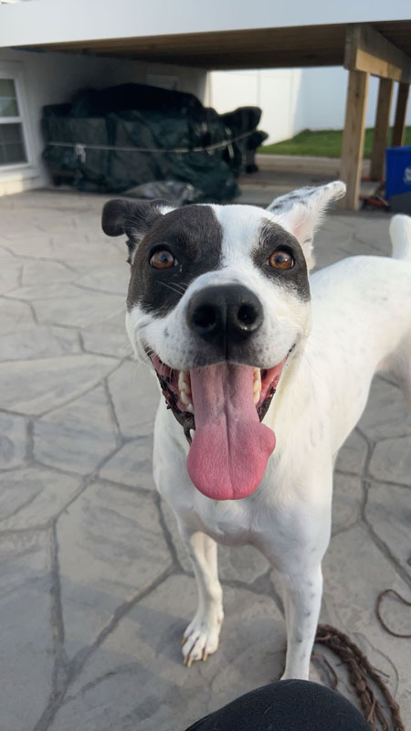

Alyssa Warner Portfolio- Photo Project |
|
| Home Print Project Photo Project Video Project Infographic Project | |
BeforeTreats Please?The original image was taken at 17.25in x 30.67in on an iPhone 14, the lighting came from warm tone fluorescent bulbs. Point of view was the main composition technique used, there are also leading lines to help bring the viewer's eyes up to the subject, however they are removed in the edited version. The field of view is focused on the subject so the background is intentionally blurred. The cute begging face clearly indicates that he is a good boy and deserves treats, but did it work? Sam the Man... Well, DogThis image of a dog was taken on an iPhone 14 in a back yard. It was around 6pm so the natural lighting was soft but direct, shining from behind a fence. A closer proximity was used, about 6in away from the subject to help the intention of making the dog the center of focus. It was taken slightly above his eye level as well. The image was taken at 17.25in x 30.67in with a resolution of 72. Remains of the West TowerThe original image was taken at the entrance of the abandoned Christiana West Tower at the University of Delaware. Leading lines were used to guide the viewer down the hall to the exit door. The lighting was mostly natural and part fluorescent, the auto feature on the phone increased the exposure. The original size was 42in x 56in, the resolution at a 72. Before the FunThe original image was taken on an iPhone 14 at a size of 56in x 42in and a resolution of 72. The sun was beginning to set outside so the doors and windows are washed out. Leading lines are used to guide the viewer's eyes around the image in a circle. Starting from the center table, going up to the back door then windows, lastly following the beams at the top to come back down to the table. |
AfterThe edited image was cropped to emphasize a dog's point of view, essentially what his brother Sam sees on the daily. It was cropped to 13.57in x 16.64in with the resolution of 72. Since the image size is smaller, the resolution gets better for printing, even though it remains the same number. Both eyes lay on the top horizon line and his nose sits on the left lower third. The quick select tool was used to outline the dog, but then inversed to grab the background. The saturation was dropped to make the dog stand out better, the colors were very similar. The dog was then edited with the levels, color balance, and vibrance tools to enhance the colors. Yes, he got treats after. The edited version of this image was cropped to emphasize the center of focus, his nose was lined up to the top horizon line for a better aesthetic. The object selection tool was used to select the subject and the edges were refined with the quick selection brush, then by inverting the selection the background was selected instead. Using the field blur filter, the background was blurred to further emphasize the subject as the center of focus while also removing the distracting objects in the back. Lastly curves, contrast, color balance and saturation adjustments were made to lessen the exposure and allow for more detail. To edit the image both levels and curves were utilized to embrace the darkness while also keeping the ceiling light bright. Some of the foreground was cropped out as the lighting became too bright and took away from the creepy vibe the image gives off. This version is similar to how it looked in real life. The image was rotated so the lines lead straight back and not diagonally. There are also aspects of symmetry used to enhance the leading lines, this is found in the parallel walls and pipes on the ceiling. The image was cropped to 26in x 35in, with the same resolution of 72. The image was cropped to 47.61in x 35.69in with a resolution of 72. Lower thirds were emphasized in the edited image to make it more pleasing to look at; where the floor meets the wall and where the wall meets the ceiling both rest on the horizontal horizon lines. The center piece of the closest table lies on the left vertical horizon line as well. The people in the background were removed so there were no distractions taking away from the beautiful room itself. The quick selection tool was used to select two of the people, but different methods were used to remove them. In order to remove the person going to the bathroom the clone stamp tool was used, while the generative fill was used to remove the woman at the table. The woman going up the steps was cropped out. The windows and doors were isolated in Photoshop to adjust the exposure without darkening the entire image. Levels and brightness/contrast was used on the full image to highlight details. |
| Home Print Project Photo Project Video Project Infographic Project | |
|
© 2024 Alyssa Warner | |